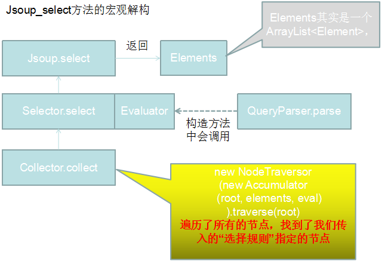

 Elements的select方法 Selector的select方法 Selector的构造方法 Selector的select方法中调用了Collector的静态方法collect。 Accumulator：收集器 Evaluator： new NodeTraversor(new Accumulator(root, elements, eval)).traverse(root); 这行代码是重点，因为这里调用traverse()方法，这个方法会遍历root节点和所有的子元素，下一篇文章会讲一下traverse方法的逻辑。 以下是Accumulator类中的head方法做的事情，而他的tail方法是空的，什么也没做。 head方法，遍历了所有的节点，把他加入了new出来的Elements中。